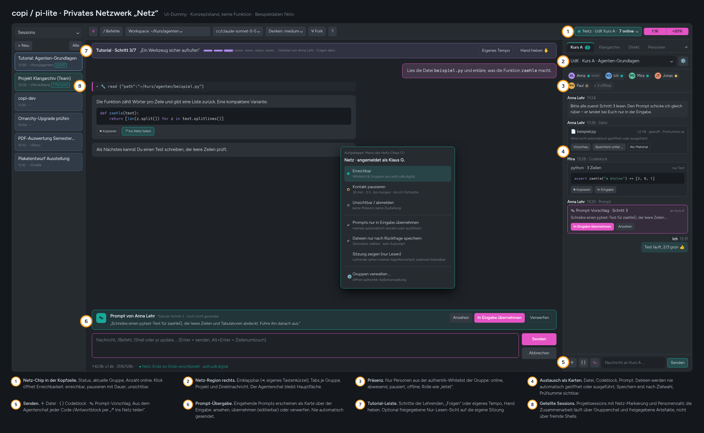
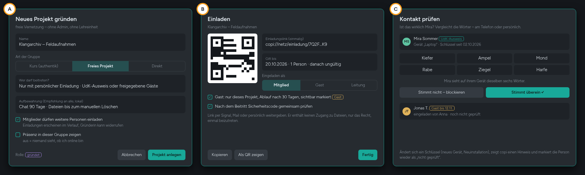

Empfohlen wird ein schlankes Peer-to-Peer-Netz, das in copi und pi-lite eingebaut ist. Für UdK-Personen gibt es einen optionalen „UdK-Ausweis“ über authentik. Ein eigener Matrix-Server ist möglich, für dieses Ziel aber unnötig schwer.
Matrix kann alles Nötige, bringt aber einen kompletten Server mit Datenbank, Medienspeicher, Benutzerverwaltung und Betrieb mit. Außerdem kämen eine große Bibliothek in beide Apps und ein zentraler Ort, an dem verschlüsselte Inhalte und Metadaten liegen.
Das P2P-Konzept braucht serverseitig nur zwei kleine, zustandsarme Dienste.
| Ihre Frage | Kurzantwort |
|---|---|
| Eigene Matrix-Instanz? | Machbar (Kap. 5, Variante A), aber nicht die erste Wahl. Wird Matrix gewählt, dann ohne Föderation und mit authentik-Anmeldung. |
| Schlankere Alternativen ohne Matrix? | Ja: eigenes kleines Relay mit MLS (B), P2P mit iroh (C, empfohlen), oder ein VPN-Netz mit Headscale (D). |
| P2P, auch ohne authentik, sicher? | Ja. Die Sicherheit entsteht durch Geräteschlüssel, Einmal-Einladungen, gemeinsam geprüfte Sicherheitswörter und MLS. authentik ist dann eine Zusatzbestätigung, keine Voraussetzung (Kap. 6). |
| Wer legt Gruppen an? | Admins (Kurse über authentik), Lehrende (in der App, durch authentik-Rolle berechtigt) und alle Nutzenden (freie Projekte über Einladungen) (Kap. 7). |
| Gäste? | Ja, nach Freigabe: Einmal-Einladung, sichtbar markiert, auf eine Gruppe begrenzt, mit Ablaufdatum. |
| Speicherdauer? | Lokal nach eigenem Ermessen. Die Risiken und Gegenmaßnahmen stehen in Kap. 8. |
| Ist der UdK-Datenschutz zuständig? | Teilweise ja. Sobald personenbezogene Daten anderer im Lehrbetrieb verarbeitet werden, gilt die DSGVO. Die Begründung und der kleinste sinnvolle Schritt stehen in Kap. 9. |
copi (nativ, Rust/egui) und pi-lite (Tauri/Web) sind zwei gleichwertige Oberflächen für den Agenten pi. Bisher arbeitet jede Person allein mit ihrem Agenten. Das Netz soll diese Arbeitsplätze verbinden, ohne den Agentenchat zu verdrängen.
Ein Tutorial Schritt für Schritt führen, Beispieldateien und fertige Prompts an alle verteilen, Fragen per „Hand heben“ sammeln.
In Projekten chatten, Codeblöcke und Zwischenstände austauschen, gute Prompts teilen.
Sehen, wer erreichbar ist, und den eigenen Kontakt jederzeit pausieren. Niemand steuert fremde Rechner.
pi-net.Gemeint ist die bewusste Übergabe eines fertigen Prompts von Lehrenden an Lernende. Eine Lehrende formuliert die Aufgabe einmal sorgfältig, und alle erhalten sie als Vorschlag in ihrer Eingabezeile. Entscheidend ist, dass die empfangende Person den Prompt sieht, ändern kann und selbst abschickt.
Damit unterscheidet sich die Funktion grundlegend von einer echten (schädlichen) Prompt-Injektion, bei der Anweisungen unbemerkt in den Agenten gelangen.
Der Entwurf zeigt, wie sich das Netz in die bestehende Oberfläche einfügt. Die Bedienung folgt drei Regeln:
| Nr. | Element | Funktion und Begründung |
|---|---|---|
| 1 | Netz-Chip in der Kopfzeile | Zeigt Status, aktive Gruppe und Personen online. Das Menü steuert die Erreichbarkeit: erreichbar, pausieren für 30 min, 2 h, bis morgen oder bis auf Weiteres, unsichtbar. Die Erreichbarkeit soll mit einem Klick änderbar sein, ohne Einstellungsdialog. |
| 2 | Netz-Region rechts | Reiter für Kurse, Projekte und Direktgespräche, mit Ungelesen-Zähler. Lässt sich per Tastenkürzel einklappen. |
| 3 | Präsenz | Online, abwesend, pausiert oder offline, dazu eine Rolle wie „leitet“. Es erscheinen nur Gruppenmitglieder, keine globale Personensuche. |
| 4 | Karten | Datei mit Prüfsumme und „Speichern unter …“; Codeblock zum Kopieren oder Übernehmen; Prompt zum Übernehmen in die Eingabe. |
| 5 | Senden | + Datei · { } Codeblock · ✎ Prompt. Im Agentenchat hat jeder Block zusätzlich „↗ Ins Netz teilen“. |
| 6 | Prompt-Übergabe | Ein eingehender Prompt erscheint als Karte über der Eingabe: ansehen, übernehmen (bleibt editierbar) oder verwerfen. Er wird nie automatisch gesendet. |
| 7 | Tutorial-Leiste | Zeigt Schritt x/y. Teilnehmende wählen „Folgen“ oder „Eigenes Tempo“ und können die Hand heben. |
| 8 | Geteilte Sessions | Markierung und Personenzahl in der Session-Liste. Projektsessions bleiben lokale Agentensitzungen; geteilt werden nur Chat und Artefakte. |
Die Architekturentscheidung lässt sich mit fünf Begriffen erklären. Wer diese Seite kennt, kann die Varianten in Kapitel 5 selbst bewerten.
Identität beantwortet die Frage „Wer bist du, und darfst du hinein?“. Das kann authentik leisten. Transport beantwortet „Wie kommt die Nachricht an?“. Dafür braucht es Server, Relays oder direkte Verbindungen. authentik ist ein Ausweisamt, keine Post.
Nur die Geräte der Gruppenmitglieder können Inhalte lesen. Server oder Relays sehen höchstens verschlüsselte Pakete und Metadaten: wer, wann, wie groß. Gegen Metadaten hilft E2EE nicht, dagegen hilft nur Sparsamkeit im Design.
Bei P2P sprechen Geräte direkt miteinander. Firewalls und Uni-WLANs verhindern das oft. Ein Relay leitet dann verschlüsselte Pakete weiter, ohne sie lesen zu können. P2P braucht also meist trotzdem einen kleinen Hilfsserver, aber keinen, der Inhalte speichert.
Messaging Layer Security (IETF-Standard RFC 9420) verwaltet einen gemeinsamen Schlüssel für Gruppen mit wenigen bis vielen Mitgliedern. Bei jedem Ein- oder Austritt wird der Schlüssel erneuert:
Mit OpenMLS gibt es eine Rust-Umsetzung.
Zwei Personen vergleichen persönlich oder am Telefon eine kurze Wortfolge, die aus ihren Geräteschlüsseln berechnet wird. Stimmt sie überein, sitzt garantiert niemand dazwischen. Das ist die stärkste und zugleich einfachste Schutzmaßnahme gegen gefälschte Kontakte.
Alle vier Varianten erfüllen die Grundfunktionen. Sie unterscheiden sich darin, wie viel Server nötig ist, wie groß die Apps werden und wer welche Daten sieht.
Neuer Homeserver unter UdK-Domain (z. B. Synapse oder ein schlankerer Rust-Server der Conduit-Familie), Anmeldung per OIDC über authentik, Föderation abgeschaltet. Die Apps nutzen matrix-rust-sdk.
+ ausgereift: E2EE, Präsenz, Dateien, Spaces, Offline-Zustellung; Element als Ersatz-Client.
− dauerhafter Serverbetrieb mit Datenbank, Medienspeicher, Updates und Backups; große Bibliothek in beiden Apps; zentraler Ort für verschlüsselte Inhalte und Metadaten; das Matrix-Rechtemodell passt nur indirekt zu authentik-Gruppen.
Ein einziger kleiner Dienst (WebSocket, SQLite) prüft authentik-Tokens und leitet verschlüsselte MLS-Nachrichten weiter. Für Offline-Empfänger hält er sie mit Ablaufzeit zwischen.
+ schlank, volle Kontrolle, gute Offline-Zustellung, einfache Anbindung an authentik.
− eigenes Protokoll muss gebaut, getestet und geprüft werden; ohne Server keine Kommunikation; Gäste brauchen ein authentik-Konto oder einen Sonderweg.
Geräte verbinden sich direkt über iroh (Rust, QUIC, Lochstanzen durch NAT, verschlüsselt, Ausweichen über ein Relay). Gruppen laufen über OpenMLS, Dateien über inhaltsadressierte Blobs. authentik stellt optional einen signierten „UdK-Ausweis“ aus.
+ kein zentraler Datenspeicher, Relay sieht nur verschlüsselte Pakete, gleicher Rust-Kern für beide Apps, funktioniert auch ohne authentik (freie Projekte, Gäste), im LAN sogar ganz ohne Internet.
− Nachrichten an Offline-Personen brauchen einen kleinen Zwischenspeicher oder warten; Mitglieder sehen sich bei direkter Verbindung gegenseitig die IP-Adressen (abschaltbar: nur über Relay).
Ein selbst betriebener Headscale-Server (Anmeldung über authentik) bildet ein privates WireGuard-Netz. Die Apps sprechen darin direkt miteinander.
+ sehr robuste, geprüfte Netzschicht; Gruppenregeln als Zugriffsregeln (ACL).
− verlangt einen zusätzlichen VPN-Client und Systemrechte auf jedem Gerät; öffnet ein ganzes Netz statt nur einer App; Gäste umständlich; Gruppen-E2EE und Chat müssen trotzdem selbst gebaut werden.
| Kriterium | A Matrix | B Relay+MLS | C P2P iroh | D Headscale |
|---|---|---|---|---|
| Serverbetrieb | hoch | gering | minimal¹ | mittel |
| Zusatzgröße der Apps | groß | klein | mittel | klein + VPN |
| Inhalte zentral gespeichert | ja, verschlüsselt | kurz, verschlüsselt | nein | nein |
| Metadaten zentral | viele | einige | wenige | Verbindungen |
| Offline-Zustellung | ja | ja | mit Postfach² | nein |
| Ohne authentik nutzbar | kaum | kaum | ja | eingeschränkt |
| Gäste | Konto nötig | Sonderweg | Einladung | umständlich |
| Eigenentwicklung | wenig | viel | mittel | viel |
¹ Ein selbst betriebenes iroh-Relay und ein kleiner Ausweis-Dienst, beide ohne Inhaltsspeicher. ² Optionales „Postfach“: ein kleiner Dienst, der verschlüsselte Nachrichten für Offline-Personen begrenzt aufbewahrt.
C erfüllt die Wünsche „schlank“, „P2P“, „auch ohne authentik“ und „maximale Sicherheit“ am besten. A lohnt sich nur, wenn Offline-Zustellung, Mehrgeräte-Komfort und ein fertiger Ersatz-Client wichtiger sind als Schlankheit. B und D sind Zwischenlösungen ohne klaren Vorteil gegenüber C.
Auch ohne zentrale Instanz kann ein P2P-Netz sehr sicher sein. Die Sicherheit entsteht aus mehreren Schichten, die sich gegenseitig absichern.
authentik muss nicht im Datenverkehr stehen. Ein kleiner Ausweis-Dienst genügt:
Das Ergebnis ist das Abzeichen UdK-Ausweis. Kurse können verlangen, dass alle Mitglieder einen gültigen Ausweis haben. Für freie Projekte ist er nur ein Vertrauenssignal.
Es gibt drei Arten von Gruppen. Sie unterscheiden sich darin, wer sie anlegt und wie man hineinkommt.
| Art | Wer legt an | Wie kommt man hinein | Typischer Einsatz |
|---|---|---|---|
| Kurs | Admins in authentik oder Lehrende in der App | Automatisch über die authentik-Gruppe (Ausweis) oder per Einladung der Lehrenden | Seminar, Tutorial, Übung |
| Freies Projekt | Jede Person | Persönliche Einladung; wahlweise dürfen Mitglieder weitere einladen | Projektgruppen, Ausstellungen, Arbeitskreise |
| Direkt | Zwei Personen | Kontaktanfrage, die angenommen werden muss | Absprachen, Hilfe unter vier Augen |
Würde jeder Kurs eine authentik-Gruppe brauchen, entstünde Verwaltungsaufwand bei den Admins. Besser trägt authentik nur die Rolle „lehrende“; der Ausweis-Dienst schreibt sie in die Bestätigung. Wer sie besitzt, darf in der App Kurse gründen, leiten und auflösen. Admins können zusätzlich Pflichtkurse über authentik-Gruppen vorgeben.

„Jede Person speichert lokal nach eigenem Ermessen“ ist datensparsam, weil es keinen zentralen Bestand gibt. Die Verantwortung verteilt sich damit aber auf alle Geräte. Diese Risiken sollten bekannt sein:
| Risiko | Was passieren kann | Gegenmaßnahme in copi/pi-lite |
|---|---|---|
| Verlust oder Diebstahl des Geräts | Chats und Dateien mit Namen, Arbeiten und Fotos anderer fallen in fremde Hände. | Lokaler Speicher verschlüsselt, Schlüssel im System-Schlüsselbund; Festplattenverschlüsselung empfehlen. |
| Unbemerkte Kopien | Backups, iCloud/Dropbox-Ordner oder Time Machine kopieren Verläufe auf Server Dritter. | Speicherort außerhalb synchronisierter Ordner; Hinweis in den Einstellungen; Export nur bewusst. |
| Kopien bei anderen | Eine Löschung bei mir löscht nichts bei den anderen. Löschwünsche sind technisch nicht durchsetzbar. | Ablaufzeiten je Gruppe als Bitte an alle Apps (automatisches Löschen); klare Kommunikation, dass Geteiltes geteilt ist. |
| Weitergabe an KI | Jemand übernimmt die Datei oder Nachricht einer anderen Person in seinen Agenten; sie geht damit an einen KI-Anbieter. | Kein automatischer Weg vom Netz zum Agenten; beim Übernehmen Hinweis „stammt von …, wird an Modell X gesendet“. |
| Verhaltensprofile | Präsenz und „Schritt erledigt“-Meldungen zeigen, wer wann wie lange arbeitet; das kann zur Kontrolle missbraucht werden. | Präsenz und Fortschrittsmeldungen opt-in und je Gruppe; keine Historie der Präsenz speichern; keine Auswertungen für Lehrende. |
| Fremde Inhalte | Dateien mit Schadcode, manipulierte Prompts, Bilder von Personen ohne deren Einverständnis. | Keine Ausführung, Größenlimits, Bereinigung von Steuerzeichen, Melden- und Blockieren-Funktion. |
| IP-Adressen | Bei direkten P2P-Verbindungen sehen sich Mitglieder gegenseitig die IP-Adresse. | Einstellung „nur über Relay“, für Gäste standardmäßig an. |
Die Frage ist berechtigt: Es handelt sich um ein Lehr-Software-Projekt, Inhalte liegen lokal und sind verschlüsselt. Trotzdem ist der Datenschutz berührt. Der Grund ist nicht die Software, sondern wessen Daten darin vorkommen und in welchem Rahmen sie genutzt werden.
Namen, Online-Zeiten, Chatinhalte, eingereichte Arbeiten, Fotos: Das alles sind personenbezogene Daten im Sinne der DSGVO, auch wenn sie verschlüsselt und nur lokal liegen.
Die DSGVO nimmt nur rein private oder familiäre Tätigkeiten aus. Ein Kurs der Hochschule, mit Teilnehmenden, die sich womöglich zur Nutzung verpflichtet fühlen, ist das nicht.
Läuft die Anmeldung über authentik und betreibt die UdK Relay und Ausweis-Dienst, verarbeitet die Hochschule selbst Daten (Konten, Gruppen, IP-Adressen). Dafür ist sie verantwortlich.
Das empfohlene Design hält den Aufwand klein:
Datenschutz bedeutet hier deshalb kein langes Verfahren, sondern wenige konkrete Schritte.
Dieses Kapitel ist eine fachliche Einordnung, keine Rechtsberatung. Ob etwa eine Datenschutz-Folgenabschätzung nötig ist, entscheidet die UdK; bei diesem sparsamen Design ist das eher unwahrscheinlich. Ein frühes Gespräch kostet wenig und vermeidet spätere Umbauten.
Empfohlen wird Variante C: ein P2P-Kern in Rust (pi-net), eingebaut in copi und pi-lite, dazu zwei kleine eigene Dienste – iroh-Relay und Ausweis-Dienst. Später kann optional ein Postfach für Offline-Nachrichten dazukommen.
| Phase | Inhalt | Ergebnis und Prüfkriterium |
|---|---|---|
| 0 · Klären | Entscheidung für C; Gespräch mit der Datenschutzbeauftragten; Domain und Server für Relay und Ausweis-Dienst; authentik-Rolle „lehrende“. | Schriftliche Entscheidung; Testserver erreichbar. |
| 1 · Kern | pi-net: Geräteschlüssel, Einladungen, Sicherheitswörter, direkte Gespräche, Präsenz. UI: Netz-Chip, Region, Personenliste in beiden Apps. | Zwei Geräte im LAN und über das Relay; automatisierte Tests mit simulierten Teilnehmenden; Paritätstest copi ↔ pi-lite. |
| 2 · Gruppen | MLS-Gruppen, freie Projekte, Rollen, Gäste mit Ablaufdatum, Entfernen mit Schlüsselerneuerung. | Entfernte Person kann neue Nachrichten nachweislich nicht lesen. |
| 3 · Austausch | Karten für Datei, Codeblock und Prompt; „Ins Netz teilen“; Prompt-Übergabe über der Eingabe; lokale Speicherung mit Ablauf. | Nichts wird automatisch ausgeführt oder gesendet (Testfälle mit präparierten Inhalten). |
| 4 · Lehre | Ausweis-Dienst (authentik), Kurse durch Lehrende, Tutorial-Leiste mit Schritten, „Hand heben“. | Probelauf mit einer kleinen Gruppe; Rückmeldungen zur Bedienung. |
| 5 · Ausbau | Optionales Postfach; Nur-Lese-Freigabe der eigenen Sitzung; unabhängiges Sicherheitsreview. | Review abgeschlossen, Befunde behoben. |
Alle drei lassen sich als einzelne Programme betreiben, ohne Datenbankserver.
Das UI bleibt gleich. Nur pi-net würde intern auf Matrix wechseln.
| Begriff | Bedeutung |
|---|---|
| authentik | Identitätsanbieter der UdK (auth.udk.digital); verwaltet Konten, Gruppen und Rollen, Anmeldung per OIDC. |
| OIDC | OpenID Connect – Standard für „Mit … anmelden“; liefert der App eine geprüfte Identität. |
| iroh | Rust-Bibliothek für direkte, verschlüsselte Verbindungen zwischen Geräten (QUIC), mit Relay als Ausweichweg; Zusatzmodule für Gruppen-Nachrichten (gossip) und Dateien (blobs). |
| MLS / OpenMLS | IETF-Standard (RFC 9420) für Ende-zu-Ende-verschlüsselte Gruppen; OpenMLS ist die Rust-Umsetzung. |
| Relay | Weiterleitungsserver für verschlüsselte Pakete, wenn keine Direktverbindung möglich ist. |
| Ausweis-Dienst | Kleiner eigener Dienst: nach authentik-Anmeldung signierte Bestätigung „Geräteschlüssel X = UdK-Person Y, Rollen Z“. |
| Postfach | Optionaler Dienst, der verschlüsselte Nachrichten für Offline-Personen kurz aufbewahrt. |
| Matrix / Headscale | Alternativen: föderierbares Chatprotokoll mit eigenem Server bzw. selbst betriebener Steuerserver für ein WireGuard-VPN. |
Hinweise zu Produkten und Bibliotheken geben den allgemeinen Kenntnisstand wieder. Vor der Umsetzung sind aktuelle Versionen, Lizenzen und der Wartungsstand zu prüfen.